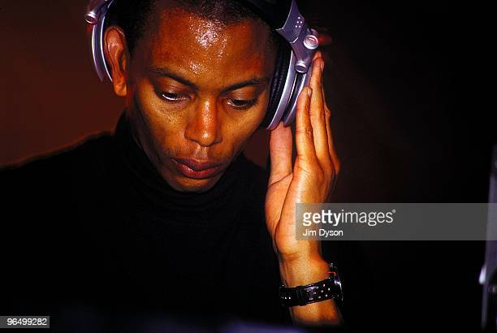

Jeff Mills Jeff Mills (born June 18, 1963, in Detroit, Michigan) is an American DJ, record producer, and composer. Thanks to his technical abilities as a DJ, Mills became known as The Wizard in the early to mid 1980s. In the late 1980s Mills founded the techno collective Underground Resistance with fellow Detroit techno producers 'Mad' Mike Banks and Robert Hood but left the group to pursue a career as a solo artist in the early 90s. Mills founded Axis Records in 1992.The label is based in Chicago, Illinois and is responsible for the release of much of his solo work.
JEFF MILLS
Underground Resistance
Underground Resistance
Main article: Underground Resistance.
Mills is a founding member of Underground Resistance, a techno collective that he started with former
Parliament
bass player 'Mad' Mike Banks.The group embraced revolutionary rhetoric and only appeared in public
dressed
in
ski masks and black combat suits. Mills never "officially" left the group, but did begin to pursue his
own
ventures outside of the collective.Many of Underground Resistance's labelmate's early releases were the
product
of various experiments by Banks and Mills, both solo and in collaboration, before Mills left the
collective
in
1991 to achieve international success as a solo artist and DJ. The collective continues to be a mainstay
of
Detroit's music scene.
UR related the aesthetics of early Detroit Techno to the complex social, political, and
economic circumstances which followed on from Reagan-era inner-city economic recession, producing
uncompromising
music geared toward promoting awareness and facilitating political change. UR's songs created a sense of
self-exploration, experimentation and the ability to change yourself and circumstances. Additionally, UR
wanted
to establish a means of identification beyond traditional lines of race and ethnicity. Another form of
UR's
rebellion concerns the rejection of the commercialization of techno. This is evident in the messages
scratched
in UR's records, lyrics and sounds expressing economic independence from major record labels.
Solo work and independent labels
The Tresor Club in Berlin where Mills was a resident prior to launching Axis Records. Mills left Underground Resistance in 1991 to pursue his own ventures. He relocated from Detroit, first to New York, then Berlin (as a resident at the Tresor club),[11] and then Chicago. There in 1992, with fellow Detroit native Robert Hood, he set up the record label Axis, and later, sub-labels Purpose Maker, Tomorrow, and 6277, all aiming for a more minimal sound than most of the techno being produced in those years.[12][13] Mills released Blue Potential in 2006, a live album of him playing with the 70 piece Montpelier Philharmonic Orchestra in 2005.[14] The album was a remix for classical interpretation, following musical acts such as Radiohead.[14] In 2013, he released Where Light Ends, an album inspired by the Japanese astronaut Mamoru Mohri and his first trip to space.[5] In 2018, Mills recorded E.P. Tomorrow Comes The Harvest with legendary afro-jazz drummer Tony Allen.

Jeff Mills Deeply inhabited by science-fiction, DJ, producer and artist Jeff Mills adopts its ideas, concepts, stories and esthetics from the outset. For him, Space is an obsession and his music almost becomes a musical science-fiction. Conquering space, his music embodies the future while both respecting the past and remaining well into the present. When he founded his own record label Axis in 1992 -a logo consisting of four triangles pointing to an invisible center-, Mills takes the rotating principle of the solar system as aesthetics, concept and model for creativity. From the beginning, his first releases explore futuristic and science fiction topics such as “Mutant theory,” “Tomorrow,” “Art / UFO”, “Time Machine” and “Alpha Centauri”. For Jeff Mills, the future is a powerful creative drive which explains the artist’s ceaseless activity. The 2000s, a turning point in Mills’s artistic career. Jeff Mills has never wallowed in his DJ status and kept on multiplying outstanding performances. When creating Fritz Lang’s “Metropolis” soundtrack in 2000, Jeff Mills takes up with his prime inspiration made of utopia, futuristic thought and a real passion for the extraordinary worlds and scenarios offered by science-fiction. He is the master of extraordinary scenarios and borrows from science fiction the common man’s notion of Tomorrow (redite). In 2001, he conceives “Mono“, a monolithic sculpture and installation inspired by Stanley Kubrick’s film “2001: A Space Odyssey” which was exhibited at the CCCB Museum during Sonar Festival in Barcelona. Mills keeps on fusing his love for music and image. Reframing his extraordinary DJing skills in 2004 when he released “The Exhibitionist”, a real-time, unedited films capturing Mills in creative DJ motions. A multi-angle filmed collection of DJ sets, allowing him to both approach video production, while beautifully complimenting his art form on the turntables. In 2005, he released AX039 “Expanded“ with the consciousness of creating for Future generations, as oppose to creating for now. Expanding his mind became more important than the Music production itself and he took a strong interest in things that would provoke and question his thoughts about The Future. Science-fiction being one of them. “Sleeper Wakes“ – a science fiction series. The Wizard likes to take his inspiration from the little music of the cosmos and keeps his head well ahead, in the stars. Since 2006 Jeff Mills created and wrote a story of life and obscure times of a fictional character that would eventually be called The Sleeper. With each chapter of the evolving story, the character gets increasingly deeper into plots that have so far, traveled the universe in search of new Worlds (“Sleeper Wakes“), contracted an unknown virus resulting into controlling electricity (“The Power“), to the end of Humans (“The Messenger“) and the eternal search of purpose and meaning (“The Jungle Planet“). In 2013 Jeff Mills has collaborated with Japanese astronaut Dr. Mamoru Mohri and released the album “Where Light Ends“, inspired by Mohri’s first trip into space, aboard the Endeavour Space Shuttle in 1992. The “Emerging Crystal Universe“, released in September 2014 as a limited object of art is the 8th chapter of this series and the 9th chapter “Free Fall“, announcing a cosmic menace, is out in June 2016. To be continued. Cinemix After “Metropolis“ soundtrack as mentioned above, Jeff Mills was involved in numerous projects of film soundtracks collaborating with Cinémathèque Française and Cité de la Musique in Paris which included his unique cine-mixes performances of “Cheat” (Cecil B. DeMille), “October” (Sergei Eisenstein), “Fantastic Voyage” (Richard Fleischer), “Etudes sur Paris” (André Sauvage) and “Woman In The Moon” (Fritz Lang). “Space is our destiny so let the punishment begin”. In 2009 Jeff Mills presents “The Trip” in London. With his science-fiction fascination Jeff Mills pursues his work on images started in 2000, and offers a sound and image mix, inviting the audience to a fully sensorial experience. “The Trip” explores the subject of how humans will endure the mental and physical constraints of traveling through Outer Space in order to discover the Unknown. Mixing live more than fifty of science-fiction movie extracts (from 1920′s to 1970′s), following the same principles as DJing, Jeff Mills invited the audience to enter a pulsating atmosphere of the abnormal… Psychedelic meets electronic. During Autumn 2013, Jeff Mills presents his first solo show as an contemporary artist entitled “Centrifugal Force” at La Passerelle Saint-Brieuc, where he develops the concept of infinite spiral motion through various sound and visual installations. In the meantime, he presents “Chronicles of Possible Worlds” at the prestigious Foundation Vasarely, a 7 hour performance based on the exploration of exoplanets, in collaboration with the laboratory of astrophysics of Marseille. Time Tunnel experience “Time Tunnel” is an all-night long DJ set with special surprises and attractions. Based of the American science-fiction TV show “The Time Tunnel” (produced by Irwin Allen in the ’60s), Jeff Mills creates a sound, visual and performance odyssey that pulls the dancing audience back and forth in time through a simulated visual Time Machine to explore the past, present and future of Music. Time Tunnel has visited several cities such as Paris, Nantes and Strasbourg. The last performance of “Time Tunnel” happened in Amsterdam on October 2015 during ADE Festival. In 2014, Jeff Mills has partnered with the French filmmaker Jacqueline Caux to create “Man From Tomorrow“. This film is more a portrait of Jeff Mill’s music than the man himself. A wandering, poetic and sensitive portrait, graphic and musical, full of film-maker Jacqueline Caux’s intimate perception of the futuristic sounds of the DJ/producer. Le Louvre Museum invites the Premiere showing of “Man from Tomorrow”. The Louvre Museum residency Thereafter, he is commissioned by the Auditorium of Le Louvre to be the 9th resident artist of “Duos Ephémères” for the year 2015, a program of 4 different shows mixing music, film and dance. At the same time, Mills works closely with the choreographer Michel Abdoul on an original performance entitled “2001: The Midnight Zone” paying again tribute to Kubrick’s masterpiece “2001: A Space Odyssey”, shown at la Cité de la Musique in May 2015. Classical performances Jeff Mills has collaborated with symphonic orchestras since many years and was the first DJ to perform and capture it on DVD for a wider audience. It all began with the Montpellier National Orchestra in 2005 at Le Pont du Gard, France. The piece was called “Blue Potential” and had been arranged for orchestra by the young French composer Thomas Roussel. In 2012, Jeff Mills played a new version of this orchestral project, now called “Light from the Outside World”. Several concerts are scheduled over the world in the following years. In 2013, Jeff Mills presented a new piece called “Where Light Ends”. A third project, inspired by Holst’ “The Planets” premiered in 2015. All these performances have always been sold-out shows. This shows the techno fans have been waiting for such opportunities, besides that fact classical audience can find new music.
Discography
What you should do to know more about Jeff Mills:
Copyright @Igor_2022